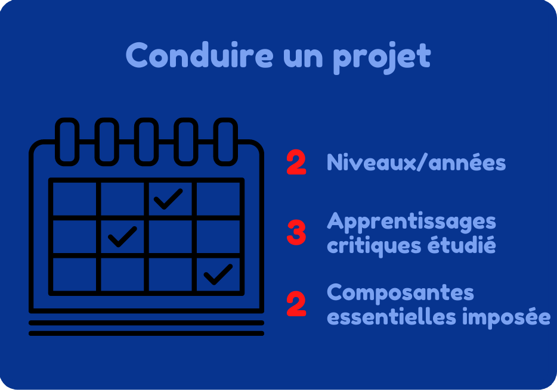
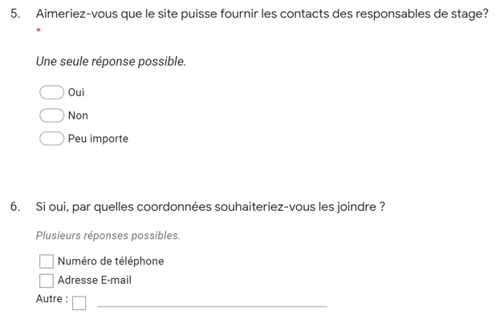
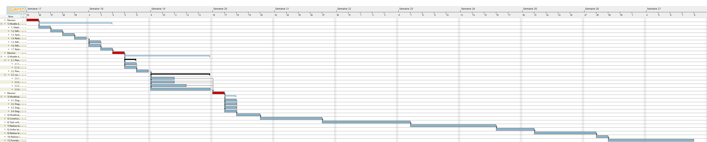
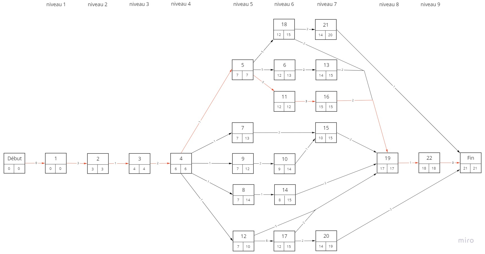
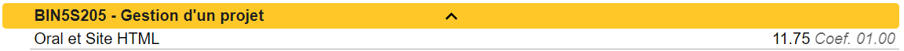
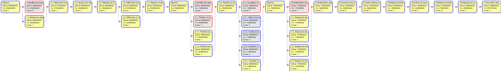
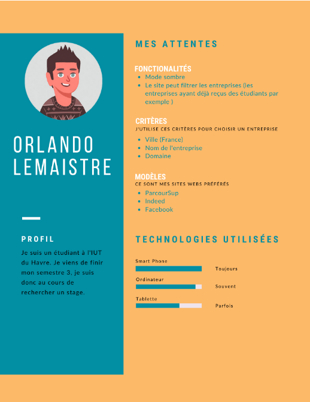
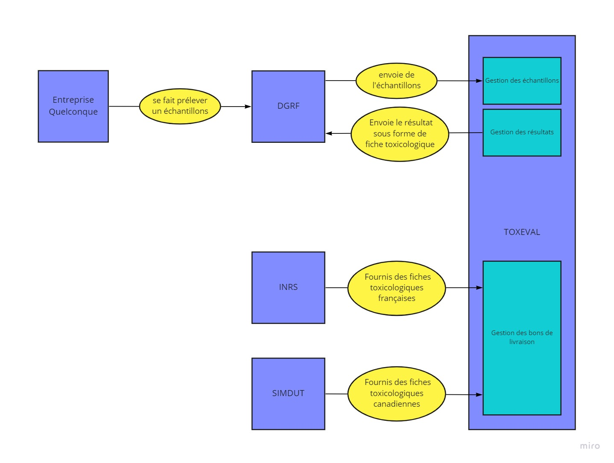

Lemarchand Lucas B2
2021/2024
Cette compétence se nomme : Conduire un projets. Elle s'étend sur 2 années et est la compétence numéro 5 du BUT Informatique.
toutes les composantes sous différents niveaux de maitrise (acquis/en cours/non acquis)
Durant la SAE 1.05, nous devions préparer des maquettes sous la demande d’un client pour des utilisateurs. Je sais identifier et différencier les besoins métiers des clients et des utilisateurs, car nous avons pris en compte les deux séparément lors de nos recherches d’informations.
Nous avons récupéré des informations auprès du client dans un premier temps lors d’une réunion.
Puis nous avons produit des questionnaires destinés aux utilisateurs.
"Passage du questionnaire fait durant la SAE 1.05"
Dans notre cas, les professeurs jouaient le rôle du client, et les deuxièmes années des utilisateurs. Je sais donc différencier ses deux besoins.
Lors de la SAE 2.05, il nous était demandé de gestionner un projet. Pour cela nous avons utilisé plusieurs outils, par exemple, nous avons utilisé GanttProject pour tout planifier tout en respectant les contraintes de temps. Pour schématiser les différents flux d’informations, nous avons utilisé Miro pour que nos graphiques soient le plus compréhensibles possible
"Diagramme de Gantt réalisé lors de la SAE 2.05"
"Diagramme MPM réalisé lors de la SAE 2.05"
Je pense maitriser en partie cet apprentissage critique, car nous avons utilisé pleins d’outil de gestion de projet. Seulement notre apprentissage de cette année n’est pas suffisant pour le maitriser entièrement.
Durant la SAE 2.05 nous devions nous occuper de la gestion d’un projet. Je connais les phases principales d’un projet car nous avons dû les organiser. De plus nous les avons attribué à des employés ainsi qu’au chef de projet. Je sais donc la différence entre Maître d’œuvre et maître d’ouvrage car nos employés étaient tous des maîtres d’œuvre spécialisé dans leurs domaines et le chef un maître d’ouvrage sachant tout faire.
En ce qui concerne les clients et les usagers, comme je l’ai expliqué pour l’apprentissage critique 1, nous avons lors de la SAE 1.05 appris à différencier le client et l’utilisateur (soit l’usager ici).
"Passage du schéma rendu pour la SAE 2.05"
Je pense maitriser partiellement cet apprentissage critique car la note quand j’ai obtenue à la SAE 2.05 est correcte mais grandement améliorable.
"Notes obtenues lors de la SAE 2.05"
En ce qui concerne le temps d’exécution je sais faire des diagrammes de Gant et des schémas de PERT à partir de GanttProject. Je sais aussi faire des schémas MPM à partir de Miro (voir ci-dessus).
"Schéma par PERT fait pas GanttProject pour la SAE 2.05"
En ce qui concerne la précision, je sais faire des personnas sur Miro.
"Personna fait pour la SAE 1.05"
Et en ce qui concerne la consommation de ressources je sais les faire sur Miro
"Flux de données externe fait pour la SAE 2.05"
J’ai donc respecté ce composant essentiel.
Durant la SAE 2.05, il nous était demandé de faire un cahier des charges et un dossier de gestion de projet sous format web.Comme j’ai été amené à faire les deux j’en conclu que je sais les différencier